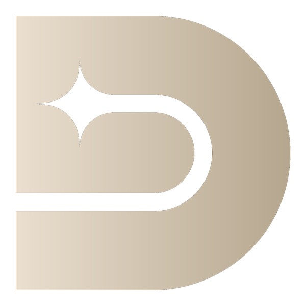

Explore Kampong Ayer, the 'Venice of the East'
A stilted water village on the Brunei River housing tens of thousands of residents, existing in some form for over a thousand years.

diskover·usOne of the wealthiest nations on Earth per capita, a water village housing tens of thousands that predates the modern city built beside it, and rainforest that remains almost entirely untouched by logging.
Explore Brunei on the map →Visa rules and emergency numbers can change without notice — confirm the specifics for your nationality and dates before you travel.
Bottled or purified water only. Not customary — rounding up is common.
Brunei's Kampong Ayer, a stilted water village on the Brunei River housing tens of thousands of residents, has existed in some form for over a thousand years and is sometimes called the 'Venice of the East,' predating and coexisting alongside the modern capital built on its banks. Thanks to substantial oil and gas wealth combined with a small population, Brunei offers its citizens free healthcare and education while maintaining roughly 70% of its territory as pristine, largely unlogged rainforest, an unusually high proportion for a country with such resource wealth.
The most comfortable window, with somewhat lower rainfall, though Brunei's equatorial climate means rain remains possible year-round.
The heaviest rain of the year, part of the region's monsoon pattern, though rarely disruptive enough to prevent travel.
Consistent warm, humid weather typical of Brunei's equatorial climate throughout most of the year.
Brunei's proximity to the equator means temperature and humidity stay fairly consistent throughout the year, with rain the main seasonal variable.
A stilted water village on the Brunei River housing tens of thousands of residents, existing in some form for over a thousand years.
One of the most striking mosques in Southeast Asia, with a golden dome and marble minaret reflected in an artificial lagoon.
Brunei's largest mosque, built to commemorate the 25th anniversary of the Sultan's reign, with 29 golden domes representing the country's rulers.
A museum showcasing the ceremonial regalia, gifts, and history of Brunei's royal family, offering insight into the country's monarchy.
A museum tracing Brunei's transformation from a small sultanate to one of the wealthiest nations per capita, driven by oil and gas discoveries.
Small motorized boats connect the capital to Kampong Ayer and surrounding river settlements, a genuine everyday form of local transport.
A museum documenting traditional Bruneian craft and technology, including boat-building and the stilted architecture of Kampong Ayer.
A once-lavish amusement park built during Brunei's 1990s oil boom, offering a curious glimpse into the country's wealth-driven development history.
A riverside market selling produce, spices, and crafts, offering a genuine slice of everyday commerce in the capital.
A pristine, largely untouched rainforest reserve accessible only by longboat, with a canopy walkway offering rare treetop views.
An elevated walkway rising above the rainforest canopy, offering a rare bird's-eye perspective on Borneo's dense forest ecosystem.
A less-visited forest reserve offering hiking trails through Brunei's pristine rainforest, a quieter alternative to Ulu Temburong.
A starchy sago-based dish eaten with a fork-like utensil and dipped in flavorful sauces, considered Brunei's most distinctive national dish.
A humble, affordable fried chicken and rice dish that's become a genuine everyday staple across the country, despite Brunei's overall wealth.
A flavorful spiced soup with noodles and meat, reflecting Brunei's Malay culinary heritage shared with neighboring Malaysia.
Colorful traditional Malay sweets and cakes reflect Brunei's shared Malay culinary heritage, sold at markets throughout the capital.
The official residence of the Sultan of Brunei, occasionally open to the public during specific holidays, reflecting the country's substantial oil wealth.
A forest reserve within walking distance of the capital, offering hiking trails and a reservoir close to the city center.
A forest reserve with waterfalls close to the capital, offering an accessible nature escape without a long journey to Temburong.
Borneo's distinctive large-nosed native primate is regularly seen along the mangrove-lined riverbanks near the capital on boat tours.
US, UK, and EU passport holders can enter visa-free for up to 90 days. Canadian and Australian citizens should verify current requirements, as visa-free allowances vary by nationality.
No — Brunei enforces a strict ban on alcohol sales and public consumption for both residents and visitors, one of the more conservative policies in Southeast Asia; plan accordingly.
A stilted water village on the Brunei River housing tens of thousands of residents, existing in some form for over a thousand years and sometimes called the 'Venice of the East.'
4-6 days covers the capital, Kampong Ayer, and a rainforest excursion comfortably, given the country's small size, though many visitors combine it with a wider Borneo itinerary in Malaysia.
Mid-range for the region, reflecting its wealth and well-developed infrastructure, though notably cheaper than Singapore for comparable quality.
A day tour including the canopy walkway and longboat transport typically runs BND 100-150 (about $75-110) per person through a licensed operator, since independent access isn't permitted. It's one of the pricier single-day excursions in Southeast Asia given the remote rainforest logistics involved.